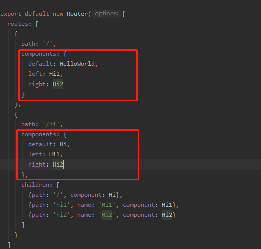
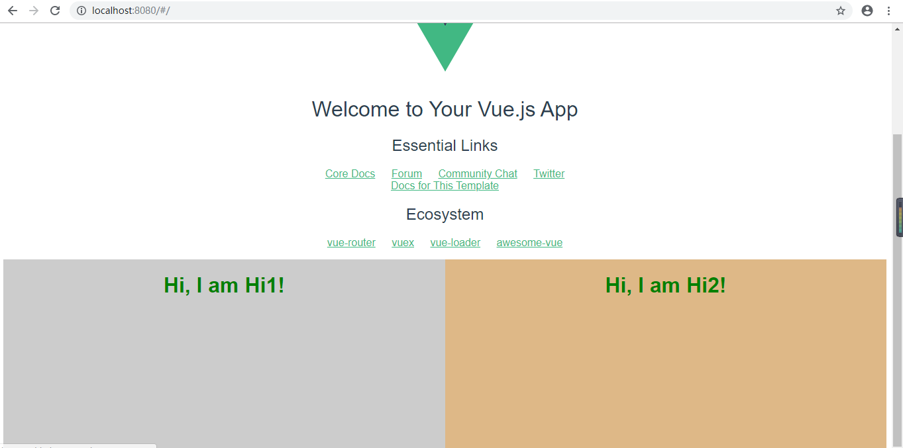

这节我们学习 单页面多路由区域操作 ，实际需求是这样的，在一个页面里我们有2个以上 router-view 区域， 我们通过配置路由的js文件，来操作这些区域的内容。例如我们在src/App.vue里加上两个 router-view 标签。 我们用vue-cli建立了新的项目，并打开了src目录下的App.vue文件，在 router-view 下面新写了两行 router-view 标签, 并加入了些CSS样式。
现在的页面中有了三个 router-view 标签，也就是说我们需要在路由里配置这三个区域，配置主要是在components字段里进行。
效果图如下：
